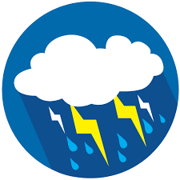

<ion-header>
  <ion-toolbar>
    <ion-title>

    WEATHER PREDICTION
    </ion-title>
  </ion-toolbar>
</ion-header>

<ion-content>
 
   <div class="ion-padding">
      <ion-item>          
          <ion-input [(ngModel)]="cityname" placeholder="enter city">             
                  <ion-button  color="primary" (click)= "getLocation()" position="floating"><ion-icon name="search"></ion-icon></ion-button>                               
          </ion-input>
        </ion-item><br>

       

        
<h2 style="text-align:center;font-family:'Courier New', Courier, monospace; color: white;">
{{weatherData?.name}},{{weatherData?.sys.country}}
</h2>
<h3 style="font-family: 'Courier New', Courier, monospace; color:white" text-center> 
    <ion-img [src] = "['http://openweathermap.org/img/wn/01d@2x.png']" alt="clear" *ngIf="weatherData?.weather[0].description=='clear sky'"></ion-img>
    <ion-img [src]= "['http://openweathermap.org/img/wn/02d@2x.png']" alt="few_clouds" *ngIf="weatherData?.weather[0].description=='few clouds'" ></ion-img>
    <ion-img [src]= "['http://openweathermap.org/img/wn/03d@2x.png']" alt="scattered" *ngIf="weatherData?.weather[0].description=='scattered clouds'"></ion-img>
    <ion-img [src]="['http://openweathermap.org/img/wn/04d@2x.png']" alt="broken" *ngIf="weatherData?.weather[0].description=='broken clouds'"></ion-img>
    <ion-img [src]="['http://openweathermap.org/img/wn/09d@02x.png']" alt="shower" *ngIf="weatherData?.weather[0].description=='shower rain'"></ion-img>
    <ion-img [src]="['http://openweathermap.org/img/wn/10d@2x.png']" alt="rain" *ngIf="weatherData?.weather[0].description=='rain'"></ion-img>
    <ion-img [src]="['http://openweathermap.org/img/wn/11d@2x.png']" alt="thunderstorm" *ngIf="weatherData?.weather[0].description=='thunderstorm'"></ion-img>
    <ion-img [src]="['http://openweathermap.org/img/wn/13d@2x.png']" alt="snow" *ngIf="weatherData?.weather[0].description=='snow'"></ion-img>
    <ion-img [src]="['http://openweathermap.org/img/wn/50d@2x.png']" alt="mist" *ngIf="weatherData?.weather[0].description=='mist'"></ion-img>
    {{weatherData?.weather[0].description}} 
</h3> 

<ion-list>
   <ion-item>
     <ion-label>
     Pressure:<b>{{weatherData?.main.pressure}}</b>
    </ion-label>
   </ion-item>
   <ion-item>
     <ion-label>
    Humidity:<b>{{weatherData?.main.humidity}}</b>
  </ion-label>
  </ion-item>
  <ion-item>
    <ion-label>
    Temperature:<b>{{temp}}</b>
    <sup>&deg;</sup>C
  </ion-label>
  </ion-item>
 </ion-list>
</div>
</ion-content>
